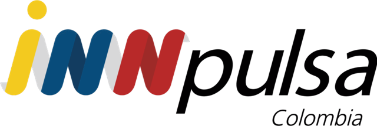

150 emprendimientos NARP
$1.500 millones; hasta $8,5 millones por negocio en maquinaria y equipos, más formación en costos y comercialización.
Producen más. ¿A quién le venden?

iNNpulsa fortalece, forma y capitaliza a miles de unidades productivas. TuConsumo les da lo que sigue: un canal de venta permanente y una comunidad que vuelve a comprar, con datos para medir el impacto después de cada programa.
 Willy acompaña a cada emprendedor
Willy acompaña a cada emprendedor
iNNpulsa es la agencia de emprendimiento e innovación del Gobierno Nacional, con el liderazgo de MinComercio. Bajo la gerencia de Mónica Moreno Realphe lidera la Ruta Milagro: el emprendimiento y la economía popular como motores de desarrollo en todos los departamentos.
$1.500 millones; hasta $8,5 millones por negocio en maquinaria y equipos, más formación en costos y comercialización.
Producen más. ¿A quién le venden?
Tecnologías, Manufactura y Agroindustria. Asistencia técnica, valor agregado, cofinanciación tecnológica y relacionamiento comercial.
El relacionamiento termina con la cohorte.
Migrantes, retornados y comunidades de acogida en 8 departamentos. Diagnóstico, asistencia técnica y capitalización productiva.
La etapa 4 necesita un canal que siga abierto.
Mujeres de la economía popular y poblaciones vulnerables. Ruta de 7 pasos con diagnóstico de salida de capacidades comerciales.
El circuito corto se puede volver digital y permanente.
Tiendas y emprendedores de la economía popular, circuitos cortos y encadenamientos productivos en territorio.
Cada tienda puede ser un punto de recomendación.
Unidades productivas de Antioquia y los Santanderes con diagnóstico, acompañamiento técnico y maquinaria.
Una feria vende un fin de semana; una vitrina, todo el año.
Fuente: innpulsacolombia.com (convocatorias, noticias y brochure del 19 de octubre de 2026).
La ruta de fortalecimiento de iNNpulsa es sólida. El último tramo, la conexión con el mercado, suele resolverse con eventos puntuales. Cuando el programa termina, el emprendedor vuelve a estar solo frente a la pregunta más difícil: ¿quién me compra el mes que viene?
La capitalización aumenta la capacidad de producir. Sin compradores que vuelvan, esa capacidad queda ociosa.
Las convocatorias exigen ventas para entrar, pero es difícil seguir las ventas de cada beneficiario cuando ya salió.
"Tenemos que ir donde el tendero que cree que esto no es para él" (viceministro de Transformación Digital, lanzamiento de Sinergia Tech).
Ponemos el marketplace de TuConsumo, su comunidad de compradores y a Willy al servicio de los egresados de los programas de iNNpulsa.
Cada unidad productiva publica sus productos en TuConsumo, en una categoría propia de los programas de iNNpulsa.
Los compradores reciben 2% de vuelta y bonificaciones por la actividad de su comunidad. Tienen razones para volver a comprar y recomendar.
Willy enseña a publicar, vender y construir comunidad, con videos y guías que funcionan en cualquier municipio.
Un tablero por cohorte con las ventas reales de cada beneficiario después del programa.
Empezamos pequeño, medimos y crecemos con lo que funcione.
Presentamos el modelo, definimos el enlace de iNNpulsa y elegimos la cohorte piloto.
Revisamos con el equipo del programa qué unidades productivas tienen productos listos para vender en línea, los permisos que aplican (INVIMA, registros) y la logística.
Jornadas con Willy en el centro ZASCA o en territorio: registro como proveedores, fotos, precios, inventario y comisión pactada. Abrimos la categoría de la cohorte en el marketplace.
Cada beneficiario invita a su comunidad y a los tenderos de su zona. Campaña digital con landing propia y talleres de Willy dentro de la agenda de iNNpulsa.
Ventas por unidad productiva, recompra, tiempos de despacho y satisfacción. Lecciones aprendidas y ajustes.
Extender a otras cohortes ZASCA, Oportunidades para Emprender, iNNpulsa Mujeres, XISQUA y la Ruta Milagro. Integrar la Red de Tiendas Solidarias como puntos de recomendación y aparecer en el directorio de Sinergia Tech.
Elegimos juntos en la reunión. Esta es nuestra recomendación:
Mueve los valores para ver las ventas que llegarían a las unidades productivas y lo que vuelve a los hogares compradores.
Con 100 unidades y 20 compradores cada una, ya hay 2.000 hogares comprando productos de la cohorte.
Escenario ilustrativo para la conversación, no una proyección comprometida. Las bonificaciones se calculan con la liquidación de puntos de TuConsumo (40% del descuento repartido en 5 capas) y solo se pagan completas cuando todas las capas tienen personas activas. La comisión de cada proveedor se pacta por separado.
Metas propuestas para validar con el equipo de iNNpulsa en la mesa técnica.
info@tuconsumo.com.co · WhatsApp 320 564 05 19